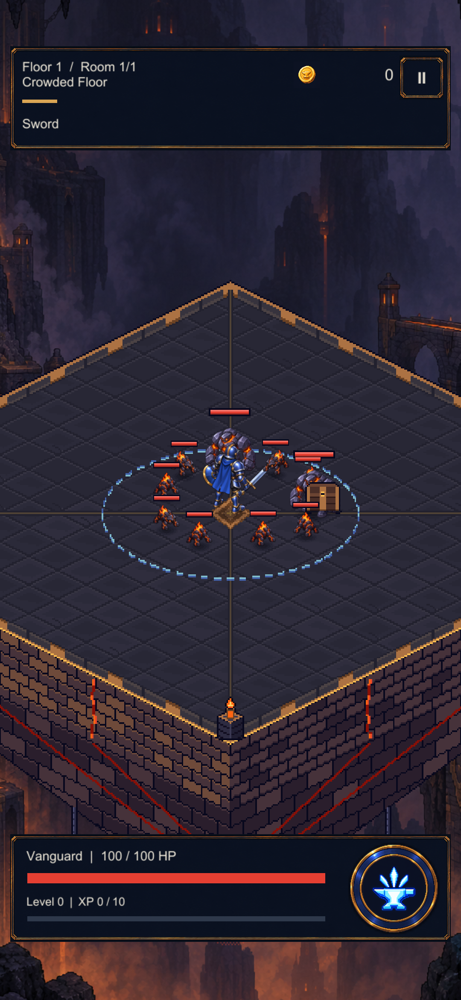
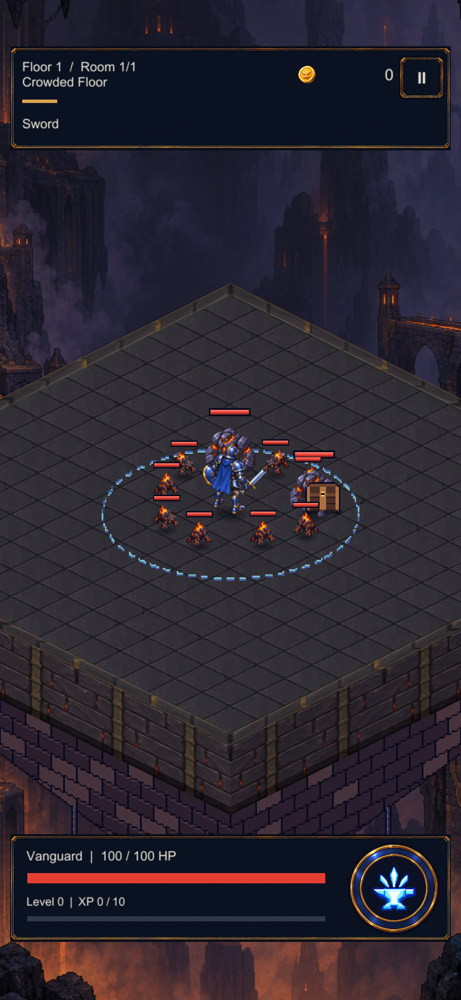
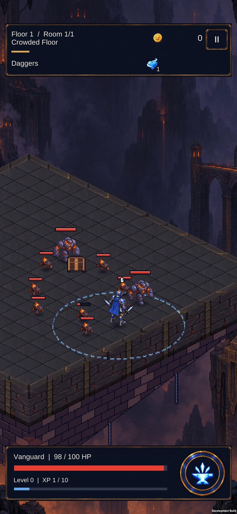
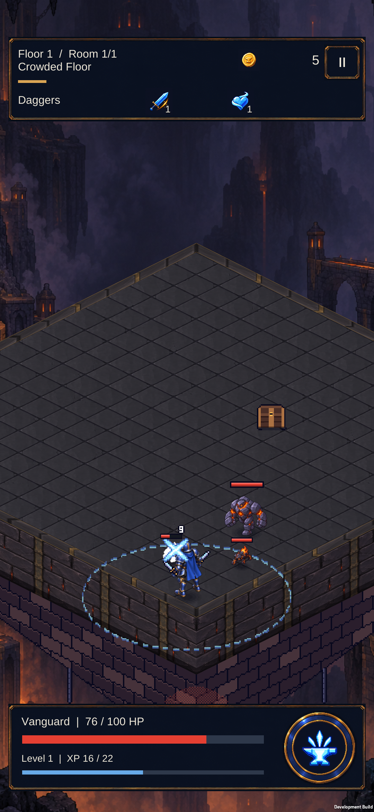

CRYPTFORGE / ENVIRONMENT / RUNTIME 01
Painted stone.
Shared by every run.
The quieter V2 floor, brass coping and near masonry now belong to the game. Exact miter joins replace the old pixel rim; the lower keel and crystal remain a separate future art pass.
Actual Unity runtime · mobile texture imports · shared geometry
Before / integrated


Left: retained pre-integration Unity render. Right: actual runtime materials. Same density room and capture recipe; combat is frozen. Rim views move the hero/camera only. Whole-platform view is diagnostic.
Device review
Installed and checked on S23. A controlled ten-enemy run and near-rim movement completed, followed by a normal warm restart. These short samples do not establish sustained performance.

Live pack after southeast movement.

Near corner: painted coping and wall join beneath live combat.